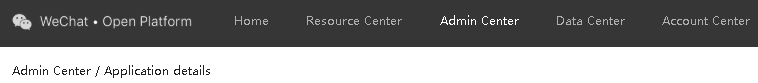
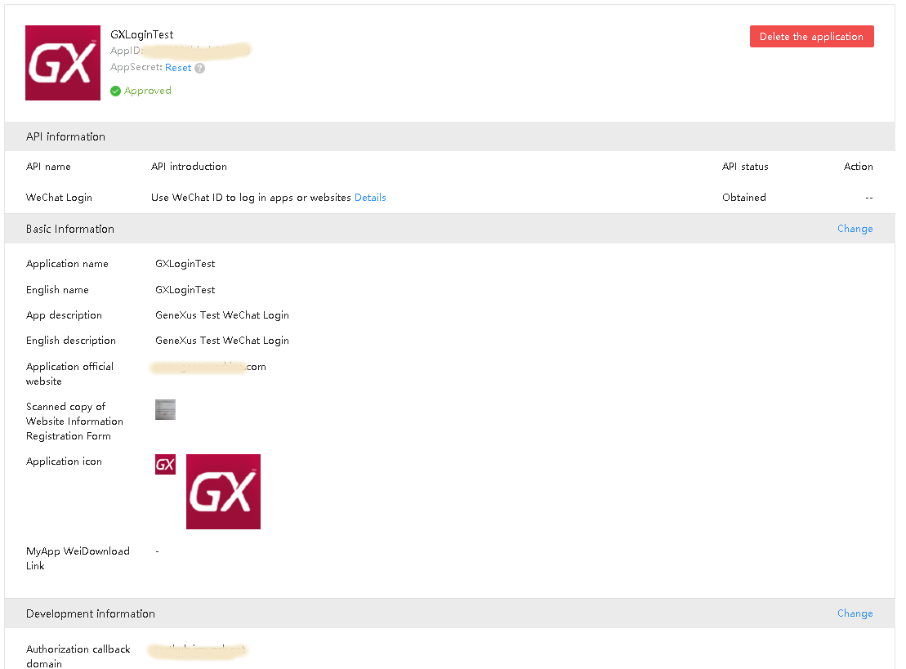
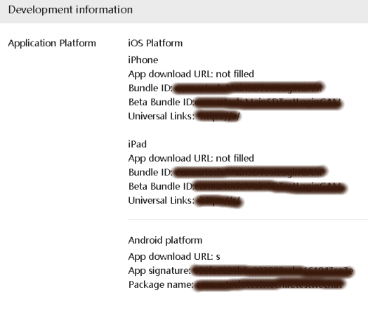
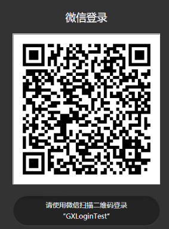
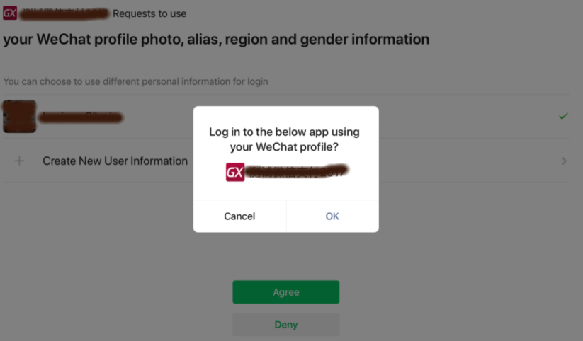

GeneXus Access Manager allows you to authenticate using Wechat.
The WeChat Authentication type is supported for Web1 and SD2,3 platforms. You need to create one Authentication Type for each platform (Web and\or Native Mobile) because the provider side treats each platform differently.
The configuration is done in two parts:
Log in or create an account in https://open.weixin.qq.com/ and follow the registration process.
Go to the "Management Center," click "Create Mobile App" or "Create Website App," and fill in the relevant information. Then, submit this app for review. Development can start after the app is approved.

The review will be completed within seven business days. Once the app is approved, the Open Platform will allocate a globally unique App Id and AppSecret.
Fill in a valid domain name required for the development process. Users can only call back to pages under this domain name after logging in with a WeChat account.

Go to the "Management Center," click "Create Mobile App," and fill in the relevant information. Then, submit this app for review. Development can start after the app is approved.

Check the following properties depending on the desired platform:
The Bundle Id property must match the Apple Bundle Identifier property.
The Universal Links property must match the Deep Link Base URL property.
The other properties can be discarded.
The App Signature must be calculated with the following application (more information) using the Package Name property.
The Package Name property must match the Android Package Name property.
Add a new WeChat Authentication Type and complete all parameters. The following must match the WeChat configuration already validated by the provider:
http://sampleURL/appname
Add a new WeChat Authentication Type and complete all parameters; the following must match the WeChat configuration (Mobile Application):
If you have two Wechat Authentication types (one for Web and one for Native Mobile), make sure the secondary authentication Type impersonates the first one using the same property value. Suppose you have wechat and wechatsd authentication types for Web and for Native Mobile, respectively. On the secondary wechatsd configuration, set the Impersonate property as wechat.
Once all the configuration is done, the normal flow of execution is the following:
The user executes an object with security, so it is redirected to the GAM Login.
Select the "sign in with WeChat" option.
The site is redirected to WeChat; use the WeChat application and scan the associated QRCode.

Confirm on your cell phone, as you will get redirected to the GeneXus object.
You need to add an event in the login object to authenticate using Wechat. The logic inside the event associated will include a call to a method of Actions external object, named "LoginExternal," for example:
Composite &LoginExternalAdditionalParameters.AuthenticationTypeName = &name &LoginOK = GeneXus.SD.Actions.LoginExternal(GAMAuthenticationTypes.WeChat, &User, &Password, &LoginExternalAdditionalParameters) EndComposite
Note that the &name variable must match the Authentication Type created for Native Mobile environments. If you only have one Wechat authentication you can use the method:
GeneXus.SD.Actions.LoginExternal(GAMAuthenticationTypes.WeChat, &User, &Password)
In any case, the &User and &Password parameters are ignored.
The application is redirected to the Wechat application to confirm the login operation. Confirm the following message:
Log in to the below app using your WeChat profile? [Cancel][OK]

Once your login is validated by Wechat, the flow goes back to the GeneXus application.
The GAM UserName assigned as key in the GAM database is related to the WeChat UnionId element as no UserName is returned. If you want to use the openid parameter, it is stored on the GAM URLProfile property as follows:
openid=SomeCodeHere
Running a Native Mobile application, it cannot be authenticated with Wechat. The following error appears on the GAM log:
Start Execute: method 'POST', name 'https://api.weixin.qq.com/sns/oauth2/access_token'
_responseString {"errcode":40029,"errmsg":"invalid code, hints: [ req_id: dbnAHFyFe-E60YAa ]"}
...
&Errors.:[{"Code":204,"Message":"appname 访问令牌错误。请与应用程序管理员联系。"}]
Access token error. Contact the application administrator
Review the configuration for the Authentication type for Native Mobile and Wechat. If the correct Authentication Type is not set, the first Wechat Authentication is used.
Running a Native Mobile application with Android, the following error occurs: Invalid Signature using Android; the Logcat details:
com.artech.samplekb.menusample D/MicroMsg.SDK.WXMsgImplComm: check signature:SampleSignature
com.artech.samplekb.menusample D/MicroMsg.SDK.WXMsgImplComm: pass
com.artech.samplekb.menusample D/MicroMsg.SDK.WXApiImplV10: registerApp, appId = SampleAppId
com.artech.samplekb.menusample W/MicroMsg.SDK.WXApiImplV10: context is not instanceof Activity or Service, disable WXStat
com.artech.samplekb.menusample D/MicroMsg.SDK.WXApiImplV10: registerApp, appId = SampleAppId
com.artech.samplekb.menusample D/MicroMsg.SDK.WXApiImplV10: register app com.artech.samplekb.menusample
com.artech.samplekb.menusample D/MicroMsg.SDK.MMessage: send mm message, intent=Intent { act=com.tencent.mm.plugin.openapi.Intent.ACTION_HANDLE_APP_REGISTER (has extras) }, perm=com.tencent.mm.permission.MM_MESSAGE
com.artech.samplekb.menusample D/MicroMsg.SDK.WXMsgImplComm: check signature:SampleSignature
com.artech.samplekb.menusample D/MicroMsg.SDK.WXMsgImplComm: pass
com.artech.samplekb.menusample I/MicroMsg.SDK.WXApiImplV10: sendReq, req type = 1
com.artech.samplekb.menusample D/MicroMsg.SDK.MMessageAct: send, targetPkgName = com.tencent.mm, targetClassName = com.tencent.mm.plugin.base.stub.WXEntryActivity
com.artech.samplekb.menusample D/ZrHung.AppEyeUiProbe: stop checker.
com.artech.samplekb.menusample D/MicroMsg.SDK.MMessageAct: send mm message, intent=Intent { flg=0x18000000 cmp=com.tencent.mm/.plugin.base.stub.WXEntryActivity (has extras) }
com.artech.samplekb.menusample V/InputMethodManager: Reporting focus gain, without startInput
com.artech.samplekb.menusample D/ZrHung.AppEyeUiProbe: notify runnable to start.
Review the configuration for the Android Signature and rebuild the APK.
Running an Android application, it cannot be authenticated with Wechat. The following error appears on the Logcat:
Datetime/com.artech.testwechat.testwechat V/ActivityThread: callActivityOnCreate Datetime/com.artech.testwechat.testwechat I/MicroMsg.SDK.WXApiImplV10: handleIntent, cmd = 1 Datetime/com.artech.testwechat.testwechat E/WeChat: Incorrect state after response Datetime/com.artech.testwechat.testwechat D/ActionExecution: onEndEvent , Wechat
Generate a new Signature key for the Android application and reconfigure the main Native Mobile object and the GAM configuration.
1 - Since GeneXus 16 upgrade 8 for Web generators.
2 - Since GeneXus 16 upgrade 9 for Android.
3 - Since GeneXus 16 upgrade 10 for iOS.
| Backlinks |
| App Id property |
| Toc:GeneXus Access Manager (GAM) |
| Integration and Evolution with GeneXus 17 |